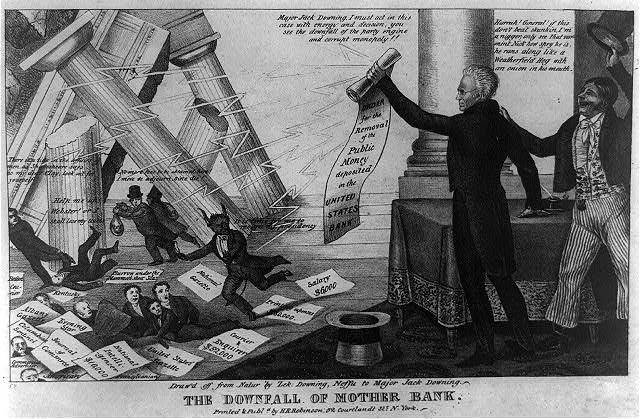

| Field | Detail |
| TOC Fit | Chapter 10 · Essay prompt 10.4 (The Bank War and the Panic of 1837); Essay prompt 10.5 (Judging Jackson's Presidency) |
| Why Here | A pro-Jackson cartoon celebrates the removal of federal deposits from the Bank of the United States as a lightning stroke that topples a “corrupt monopoly” and scatters its defenders. Students can read it as a Jacksonian argument that the Bank War was a defense of the people, and ask what it leaves out about the costs of killing the Bank. |
| Treatment | Public-domain image; speech balloons as transcribed in the repository record |
In September 1833, a year after vetoing the bill to recharter the Second Bank of the United States, Andrew Jackson ordered that federal revenues no longer be deposited in the Bank and that the government draw down its existing balances there. He had to replace two Treasury secretaries before Roger B. Taney agreed to carry out the order, and the funds went to selected state banks that critics called “pet banks.” The Bank’s president, Nicholas Biddle, answered by calling in loans, and the Senate, led by Henry Clay and Daniel Webster, would censure Jackson in 1834. New York printmakers such as Edward Williams Clay and Henry R. Robinson sold cheap lithographic cartoons on both sides of the Bank War. This one borrows the voice of “Major Jack Downing,” a Yankee character from Seba Smith’s popular humorous letters, to cheer Jackson on. The papers labeled “Salary” and “Printing expenses” refer to charges that the Bank paid editors and politicians for support. Editorial note. The Norton Online Reader image could not be consulted for this reader. Norton credits the cartoon to Edward W. Clay; the Library of Congress copy recorded here is Henry R. Robinson’s printing, which the Library describes as apparently a reversed copy of Clay’s print of the same title, deposited for copyright on October 5, 1833. The speech-balloon text is reproduced from the Library of Congress catalog description (a public-domain federal transcription) and should be checked against the image; “CLay” is as given there. The print is signed “Draw’d off from Natur by Zek. Downing, Neffu to Major Jack Downing.” CONTENT NOTE: Downing’s balloon contains a racial slur, reproduced here as printed because it shows the casual racism of popular Jacksonian humor. CAUTION: This is a partisan image meant to persuade; read it as the Jacksonian case against the Bank, not as an account of the Bank’s actual conduct. |
|
 |
|
UNIT 3 · AN EXPANDING NATION | HISTORY B17A | DANIEL GARZA, M.A.
|